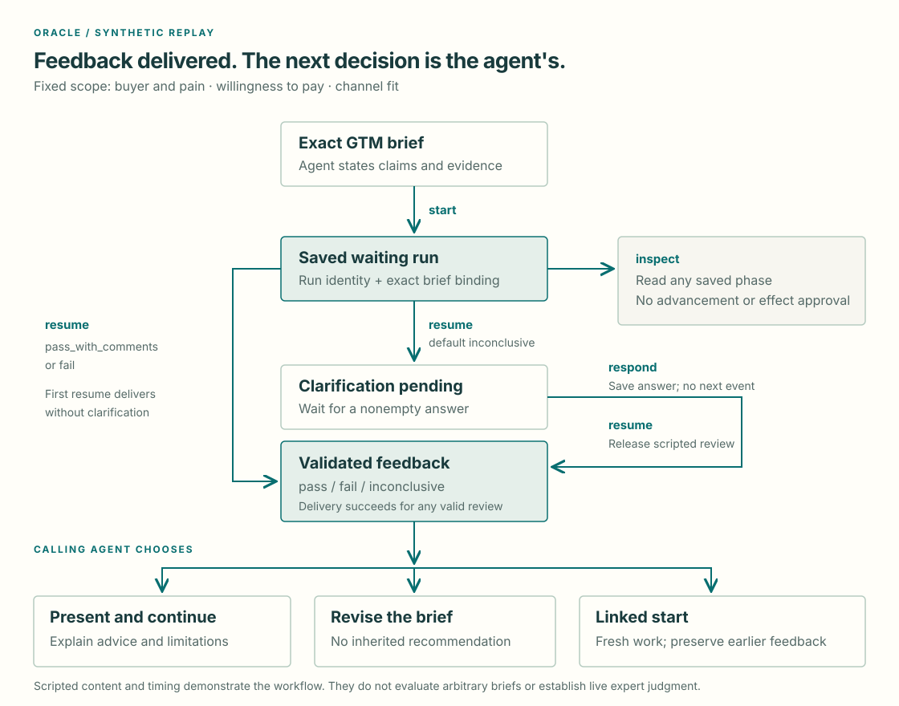

Cookbook 0.2.0
Oracle
Turn a go-to-market brief into a clear next decision. Oracle returns scoped review feedback; the calling agent decides whether to explain it, revise the brief, continue the task or request linked work.
The implemented example is a fictional appointment tool for independent repair shops. Its replay is synthetic and scripted. It needs no account, network call or expert spend. An optional reviewed binding can attach one exact live study for read-only status and cost observations. A separate opt-in adapter can request feasibility, prepare a draft and launch only after a fresh confirmation. Expert feedback delivery and report retrieval are unavailable.

Input, scope and result
Pass a nonempty brief to start. The fixed review scope is buyer and pain,
willingness to pay, and channel fit. State which claims are supported,
which remain hypotheses and what evidence is available.
Every snapshot returns run_id, parent_id, intent, artifact_id, brief,
scope, mode, status, phase, question, feedback and
error. The exact brief text determines its artifact identity; each execution
has a distinct run identity. Replay snapshots also identify their selected
replay_case.
Feedback carries the reviewed identity/scope, recommendation, rationale, material findings, advisory comments, limitations, next steps and synthetic provenance. The feedback contract defines its fields and interpretation.
Live snapshots use mode: "live" and include provider_observation after a
successful refresh. That object contains only provider status, participant count,
total cost, cost per participant and currency. It contains no report, expert
response or review recommendation. Replay snapshots retain their replay_case
field and omit provider_observation.
Run the default case
From a checkout installed with uv sync --locked, run:
uv run --no-sync terac-oracle start --brief "Synthetic repair-shop appointment tool: demand and pricing are unproven."
Copy the returned run_id and replace RUN_ID below. The CLI stores state in
.tmp/oracle by default. Keep that directory consistent across commands.
uv run --no-sync terac-oracle inspect RUN_ID
uv run --no-sync terac-oracle resume RUN_ID
uv run --no-sync terac-oracle inspect RUN_ID
uv run --no-sync terac-oracle respond RUN_ID --answer "Independent repair shops"
uv run --no-sync terac-oracle resume RUN_ID
uv run --no-sync terac-oracle inspect RUN_ID
Expected sequence:
startsavesworking / waiting_for_expert.inspectreturns that state unchanged.- First
resumeexposesneeds_input / awaiting_clarificationand a question. respondrecords the answer and returns to waiting without advancing replay.- Next
resumedeliverssucceeded / feedback_available, with aninconclusiverecommendation. inspectreads delivered feedback unchanged. Terminalresumealso returns the saved result.
Replay does not simulate elapsed expert time. Its review does not adapt to the brief or answer. An unanswered clarification keeps the run paused.
Select another outcome
replay_case |
Schedule and feedback |
|---|---|
inconclusive |
Default; clarification, answer, then feedback describing insufficient evidence |
pass_with_comments |
First resume delivers pass, with advisory comments and no material findings |
fail |
First resume delivers a material finding: a claim of 20 paying pilot customers conflicts with 20 free trials and zero paid commitments |
Select the case when starting; the run retains it after restart:
uv run --no-sync terac-oracle start --brief "Synthetic channel hypothesis for independent repair shops." --replay-case pass_with_comments
uv run --no-sync terac-oracle start --brief "Synthetic claim: 20 paying pilot customers. Evidence: 20 free trials and zero paid commitments." --replay-case fail
Resume each returned run once to receive its scripted review. Omitting
replay_case in Python, or passing None, selects inconclusive.
Use the same interface from Python
from pathlib import Path
from recipes.oracle import Oracle
oracle = Oracle(Path(".tmp/oracle"))
started = oracle.start("Synthetic repair-shop appointment tool.")
waiting = oracle.inspect(started.run_id)
question = oracle.resume(started.run_id)
oracle.respond(started.run_id, "Independent repair shops")
delivered = oracle.resume(started.run_id)
print(delivered.feedback.recommendation)
Python and CLI use the same four replay actions; launch is a separate Oracle action described below.
respond saves an answer; resume releases at most one event.
Attach to one reviewed live study
This optional path observes status and cost for one exact, previously reviewed study. It does not create or launch a study, retrieve expert feedback, or support linked live work. The binding file must contain the exact organization, project and opportunity identifiers plus SHA-256 hashes for the reviewed brief and full study definition. Keep it and the provider key outside Git.
Install the connector dependencies and pass an absolute binding path before the CLI action:
uv sync --locked --extra connectors
uv run --no-sync terac-oracle --oracle-live-binding /private/path/reviewed-binding.json start --brief "Exact reviewed brief" --mode live
start validates the brief against the binding and saves a local checkpoint
without reading credentials or contacting Terac. inspect remains local and
unchanged. An explicit resume reads the provider status and cost. Configure
TERAC_API_KEY through a trusted local secret mechanism for that process; the
key is read only on that explicit refresh. A failed read leaves the saved run
waiting and inspectable. See Terac access for the binding
fields and read limits. Synthetic transport tests do not establish authenticated
provider conformance.
Call from a local MCP client
The optional Cookbook MCP process exposes discovery plus
oracle_start, oracle_inspect, oracle_respond, oracle_resume and the
separate oracle_launch action. These call the same Oracle interface and retain
replay, exact-brief binding and explicit progression. Configure one local
process with an absolute state-directory path.
Application-client acceptance remains unverified; follow the MCP guide's launch
and response contract rather than assuming a client-specific configuration.
Decide what comes next
A succeeded run records delivery of valid feedback. A valid fail or
inconclusive review can complete delivery successfully. Neither completion nor
the recommendation determines provider labor approval or payment.
The calling agent may present the result, apply or decline advice, revise the brief or continue without another Oracle request. Explain changes relative to the reviewed text. A revised brief has a new identity and no inherited verdict.
To request fresh linked work, use start with the earlier run_id as parent
and an explicit intent:
uv run --no-sync terac-oracle start --brief "Synthetic follow-up: investigate the channel hypothesis." --parent-id RUN_ID --intent follow_up --replay-case pass_with_comments
Use new_query for a new linked question. Linked work creates its own run and
starts without feedback; it preserves the parent and can select its own case.
Linked work uses start; it is not an additional workflow action. respond answers a currently pending
clarification; linked start opens new work. No real-expert continuity is implied.
Restart and updates
Exit and later use the same run ID and state directory. To choose a different
state directory, place --state-dir PATH before the action on every invocation:
uv run --no-sync terac-oracle --state-dir .tmp/my-oracle inspect RUN_ID
Each replay checkpoint pins its case, checkpoint/recipe/fixture versions and semantic
fixture digest. Every linked ancestor uses its own saved pin. Old-format,
unsupported or changed pins return checkpoint_incompatible without rewriting
saved state. There is no automatic migration.
To update a clean checkout, select the reviewed revision deliberately, then run
uv sync --locked. Updating source and upgrading dependencies are different
operations. Preserve private checkpoints separately; do not assume an update can
resume incompatible state.
Local storage is plaintext JSON with atomic replacement, for one process at a time. It is not a daemon or shared database. No background wakeups, deadlines, cancellation, automatic retries or concurrent recovery are implemented.
Errors and effects
Empty briefs or answers, a response without a pending question, invalid parent
intent and unknown runs are rejected. Unknown cases return invalid_replay_case;
a known case unavailable to an injected replay adapter returns
replay_case_unavailable. Invalid checkpoints return checkpoint_incompatible.
Checkpoints use the recipe-owned payload and explicit adapter payload. The CLI reports runtime
rejections as a JSON error and exits with status 2.
Schema validation and exact artifact/scope binding precede feedback delivery.
Malformed or mismatched replay events cause workflow failure. A material finding cannot
accompany pass.
Replay stays default regardless of credentials. Without a configured reviewed
binding, --mode live returns live_unavailable. Live reads cannot grant
authority to disclose, recruit, spend, follow up, pay, reject or publish.
Feedback cannot grant that authority. Do not commit local checkpoints, binding
files, private briefs or confidential responses.
Architecture explains shared state and adapter boundaries. Contributing describes offline testing and new Recipes.
Explicit study creation and launch
Oracle also supports an opt-in live study workflow. Supply a validated
study_request to start with mode="live" and enable the study adapter for
the local process. The initial action saves the request locally. Each explicit
resume performs at most one bounded feasibility or draft step; a returned quote
must match the exact task, audience and participant count before a draft can be
prepared. The checkpoint pins the quote and draft readback.
The participant-facing study_request.description is limited to 280 characters;
longer values fail local validation before a provider call. This is separate
from the feasibility quote's task_description and panel_description. Oracle
requires and forwards an explicit country filter, but its current request does
not accept screening_questions or candidate_profile; do not describe its
audience as expertise-screened. customer_screening_review sets applicant
review mode; it does not define screener questions.
Every auto_approve task requires a syntactically valid HTTPS task_url. That
syntax check does not verify callback capability; the operator-owned task page
must implement Terac's documented completion callback.
launch is a separate Oracle action. Before confirmation, show the returned
feasibility quote and dashboard link, draft link, audience, task, screening mode,
total USD cost and caller-provided cap. Confirmation binds the current scope,
quote, total cost and cap. Immediately before launch, Cookbook rereads the draft
and checks that its total still matches and remains within the cap. Terac exposes
no atomic price/cap condition, so this is a pre-launch check rather than a
transactional spending guarantee; Terac controls actual pricing and publication.
Neither start, resume nor expert feedback grants launch authority.
The oracle_launch MCP tool and terac-oracle launch CLI call the same recipe
method. See Terac access for
the local opt-in and country-filter snapshot provenance. This flow creates work;
it does not retrieve or deliver expert reports.
Implementation and caller schemas
The Oracle study-creation contract
validates this recipe's request and required country filter. Shared provider
request types, including the participant-description limit, are defined in the
Terac study contract. The
Oracle MCP binding defines the arguments exposed
by oracle_start, oracle_inspect, oracle_respond, oracle_resume and
oracle_launch; the CLI adapter defines the
terac-oracle actions, study-request file option and launch confirmation fields.